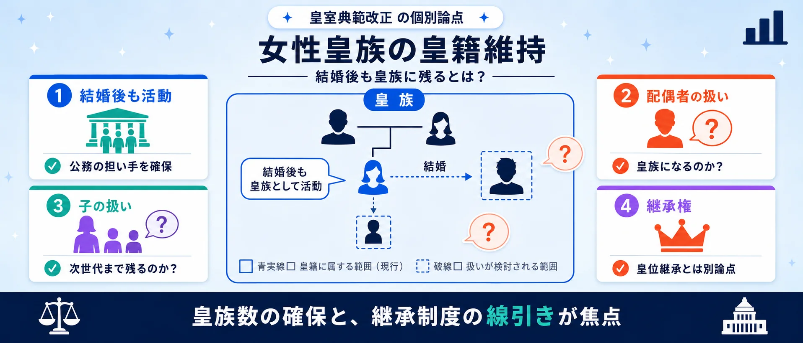
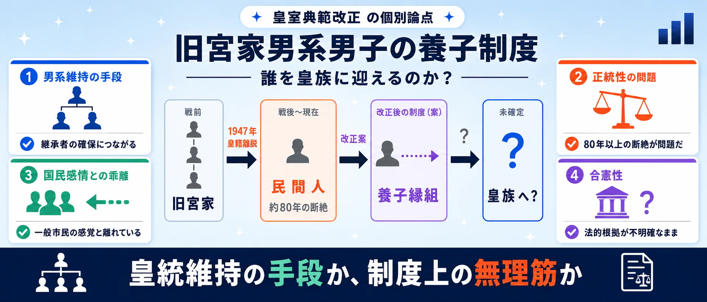
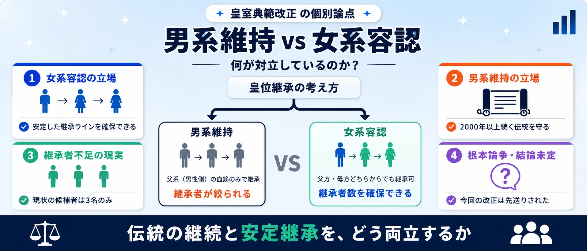
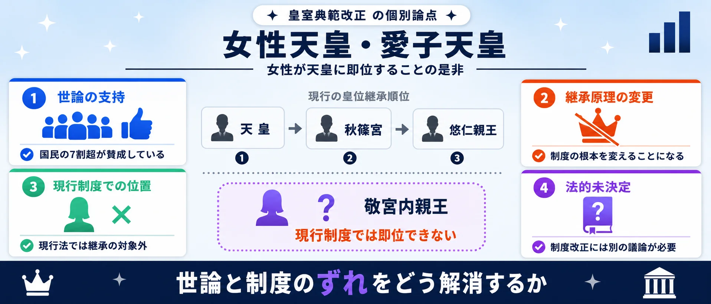
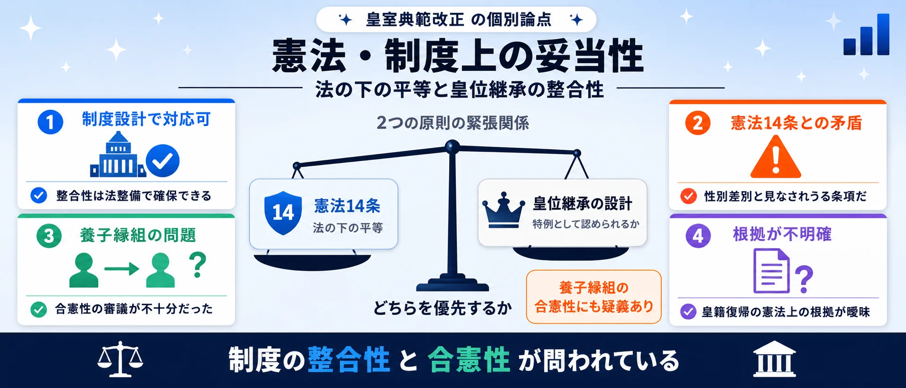
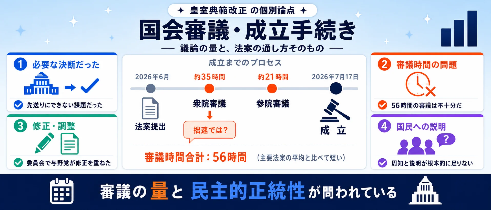

争点①
女性皇族の皇籍維持
結婚後も皇族に留まることを認める。皇族数の減少に歯止めをかける核心措置。
賛成：皇族数の確保・継承の安定化
反対：配偶者・子の身分整理が不十分

男系維持か、女系容認か。養子制度は妥当か。
SNS投稿326件のうち2D分類済み273件（うち論点分類268件）を、AIが5つの論点に整理。世論調査ではなく、反応サンプルの論点比較です。
「改正への賛否」と「男系か女系か」——2つの軸が交差するため、保守派にも革新派にも賛成と反対が混在します。同じ「反対」でも右派は「女系への布石」、左派は「女性天皇が議論されない」と理由が正反対です。6つの争点を図解で把握してから投票に進んでください。画像はタップで拡大できます。
女性皇族の皇籍維持
結婚後も皇族に留まることを認める。皇族数の減少に歯止めをかける核心措置。

旧宮家男系男子の養子制度
1947年に離脱した旧宮家の男系男子を養子縁組で皇籍復帰させる。賛否が真っ二つ。

男系維持 vs 女系容認
「父系の血」だけを正統とするか、母系も認めるか。継承原則をめぐる最大の思想対立。

女性天皇・愛子天皇
女性が天皇に就くことの是非。愛子内親王を念頭に置いた議論が国民世論を二分。

憲法・制度上の妥当性
今回の改正が憲法の政教分離・平等原則などと整合するかを問う。合憲性への疑義。

国会審議・成立手続き
成立までの審議期間・与野党の合意形成プロセスへの疑問。手続きの正当性が焦点。

使い方: 6つの争点を図解で確認してから、次の投票で「自分が一番気になる争点」を選んでください。
2026年7月17日、改正皇室典範が参議院で可決・成立しました。女性皇族の結婚後の皇籍維持と、旧宮家の男系男子を養子に迎える制度が柱です。まず気になる論点を選び、次に改正への総合評価を選んでください。
1一番気になる論点を選ぶ （全2問）
※ 世論調査ではありません。投票は匿名で集計され、サーバーに保存されます。
※ 世論調査ではありません。
中心の「皇室典範改正」を、論点ごとのセクターが囲みます。扇の大きさは投稿数、中心からの距離は感情の熱量（外側ほど強い反応）、点の色は改正への評価（緑=支持 / 赤=反対・慎重 / 灰=中立）。投票後は、選んだ論点セクターに「あなたはココ」を表示します。

最多の論点。「男系維持こそ皇統の根幹」と主張する保守派と、「女性天皇・女系天皇を排除するのは時代錯誤」と主張する改革派が真っ向から対立しています。興味深いのは、男系維持派の中にも改正に「賛成」する層がいること。旧宮家養子を通じて男系を強化できるとみるからです。反対に、女系容認派は今回の改正では不十分として反対に回る構造があります。
中立がほぼゼロという分極化した論点。旧宮家の男系男子を養子として迎える新制度をめぐり、「憲法14条（法の下の平等）違反では」「80年前に離脱した家系に正統性はあるのか」という批判と、「男系維持の現実的な唯一の方法」という擁護が拮抗しています。熱量は最も低く、感情ではなく法解釈で議論される傾向があります。
このテーマで最も感情温度が高い論点。改正の中身ではなく「通し方」への怒りが噴出しています。「国民的議論なしに参議院で成立させた」「皇室の根幹に関わる法案を拙速に処理した」という批判が8割近くを占め、賛成側も「反対政党の姿勢こそ問題」と政局色の強い議論に。改正の内容以前に、民主的プロセスへの不信が読み取れます。
「女性天皇」（男系の女性が即位）と「女系天皇」（母方の血統で即位）の区別をめぐる論点と、愛子内親王の即位可能性を直接論じる投稿を統合した争点。中立が半数超を占めるのは概念整理の投稿が多いためです。「推進派は女性天皇と女系天皇を意図的に混同している」という批判と、「そもそも区別に意味はない」という反論が対立。また少数ながら愛子天皇を個人として論じる声も国民感情を浮き彫りにします。
2026年7月17日、改正皇室典範が参議院で可決・成立しました。柱は2つ。第一に、女性皇族が結婚後も皇籍を維持できるようにする規定。第二に、旧宮家（戦後に皇籍を離れた家系）の男系男子を養子として皇族に迎え入れる制度の創設です。いずれも減り続ける皇族数への対応ですが、女性天皇・女系天皇の議論は先送りされました。
賛成派は「皇族が事実上絶えるリスクへの現実的対応」と評価します。反対派は大きく二方向に分かれます。保守派は「女性皇族の皇籍維持は女系天皇への布石だ」と警戒し、改革派は「女性天皇・女系天皇を議論しない改正は不完全だ」と批判します。同じ「反対」でも理由が正反対である点が、このテーマの構造的な特徴です。
SNS上の反応は改正反対・慎重が多数ですが、右派の「男系が壊される」という危機感と、左派の「女系が排除された」という不満が混在しています。賛成は少数ながら「男系維持の手段として評価」する右派と「第一歩としてまず前進」と見る中道派がいます。改正の賛否と継承観（男系vs女系）という2つの軸が交差する、このテーマならではの複雑な構図です。
強く反対80件＋慎重60件。賛成側は30件（概ね賛成24・強く賛成6）にとどまり、中立・態度不明が103件。
男系維持寄り95件（強い男系55・やや男系40）。女系容認寄り45件（やや容認20・強い容認25）。中立133件。
論点別の平均熱量は立法手法が1.17で最高。愛子さま0.90が続き、養子制度0.56が最も冷静。
| 男系vs女系 | 75 |
|---|---|
| 養子制度 | 54 |
| 立法手法 | 54 |
| 女性天皇の区別 | 24 |
| 愛子さま | 5 |
| その他 | 56 |
| 合計（意見・論点分類済み） | 268 |
| 強く反対 (-2) | 80 |
|---|---|
| 慎重 (-1) | 60 |
| 中立 (0) | 103 |
| 概ね賛成 (+1) | 24 |
| 強く賛成 (+2) | 6 |
| 強い男系維持 (-2) | 55 |
|---|---|
| やや男系維持 (-1) | 40 |
| 中立・言及なし (0) | 133 |
| やや女系容認 (+1) | 20 |
| 女系容認 (+2) | 25 |